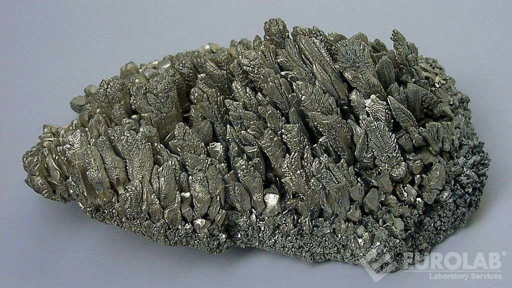
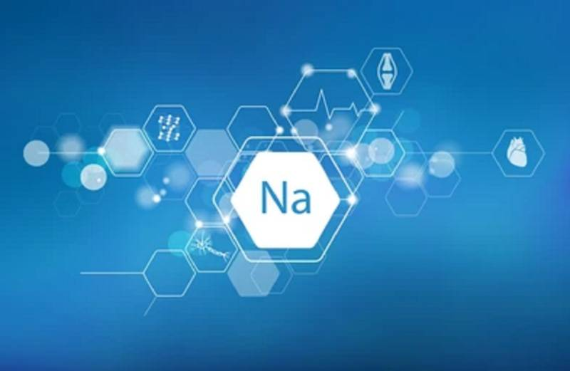
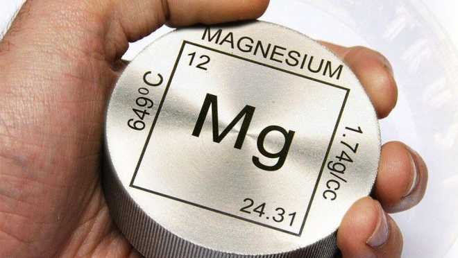

Магний
Магний (химический символ — Mg, от лат. Magnesium) — химический элемент 2-й группы (по устаревшей классификации — главной подгруппы второй группы, IIA) третьего периода периодической системы химических элементов Д. И. Менделеева с атомным номером 12.Простое вещество магний — лёгкий, ковкий щёлочноземельный металл серебристо-белого цвета

Минералы, содержащие магний (магнезит, тальк, асбест), известны с глубокой древности. Индивидуальность магния как химического элемента установлена в 1755 г. Дж. Блэком. Магний впервые получен в 1808 г. Г. Дэви, который выделил этот металл из амальгамы (сплава с ртутью), образовавшейся при воздействии электрического тока на влажную смесь, содержащую гидроксид магния Mg(OH)2 и оксид ртути HgO. Латинское название элемента, вероятно, произошло от названия г. Магнесия-на-Меандре в Малой Азии. Русское название элемента «магний» впервые появилось в 1831 г.

На долю магния приходится, по разным данным, от 1,80 до 2,35 % массы земной коры. В природе магний встречается только в виде соединений. Известно более 100 минералов, содержащих магний, из них промышленное значение имеют магнезит, доломит, асбест, бишофит, карналлит, эпсомит и некоторые другие. Значительно содержание магния в воде морей и океанов, а также в составе некоторых подземных вод и солевых озёр. Присутствие ионов Mg2+ определяет жёсткость воды. Магний входит в состав хлорофилла, поэтому все зелёные растения содержат магний (до 2,7 % массы сухого вещества).

Важнейшая область применения металлического магния – производство лёгких сплавов магния с алюминием и другими компонентами. Металлический магний используется для металлотермического выделения таких металлов, как титан, цирконий, ванадий, уран. Смеси порошкообразного магния с окислителями применяются в зажигательных и осветительных составах. Гидрид MgH2 перспективен как аккумулятор водорода. Магний применяется для изготовления растворимых анодов для химических источников тока, используется в антикоррозионных системах защиты других металлов. Магний необходим для нормального функционирования организма человека, входит в состав ряда ферментов (суточная потребность человека в магнии составляет 0,3–0,5 г). Потребность сельскохозяйственных растений в магнии обеспечивается внесением в почву магниевых удобрений.